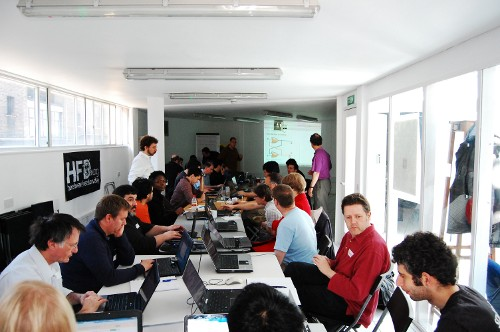

Feedback, contributions and discussion:
An Introduction to FPGA Programming

Chip Hack aims to provide a gentle introduction to FPGA programming using the Verilog hardware description language (HDL) and is:
- a set of learning materials and workshop notes;
- an event.
No prior experience with HDLs and FPGA workflows is assumed, but some programming experience and an understanding of basic digital electronics is required.
Events
Anyone can organise a Chip Hack event and this is encouraged. However, the organising team will need to have some Verilog/FPGA experience.
Upcoming
06-07/09/17. Hebden Bridge Town Hall, Hebden Bridge (UK) — as part of Wuthering Bytes 2017 [event page]
Previous
24-25/05/14. Makespace, Cambridge (UK) [event page]
20-21/04/13. The Centre for Creative Collaboration, London (UK) — as part of Hardware Freedom Day [event page] [photos] [video]
Learning materials and workshop notes
The materials and supporting workshop notes were originally developed for an event that was held over the weekend of 20-21st April 2013, at the Centre for Creative Collaboration in London (UK), and as part of Hardware Freedom Day.
See the GitHub repository and wiki.
Note that these are under active development and at present may not be entirely suitable for unsupported use.
Contributors
- Andrew Back (Embecosm)
- Julius Baxter (OpenRISC)
- Dr Jeremy Bennett (Embecosm)
- Simon Cook (Embecosm)
- Saar Drimer (Boldport)
- Omer Kilic (Ubiquiti Networks)